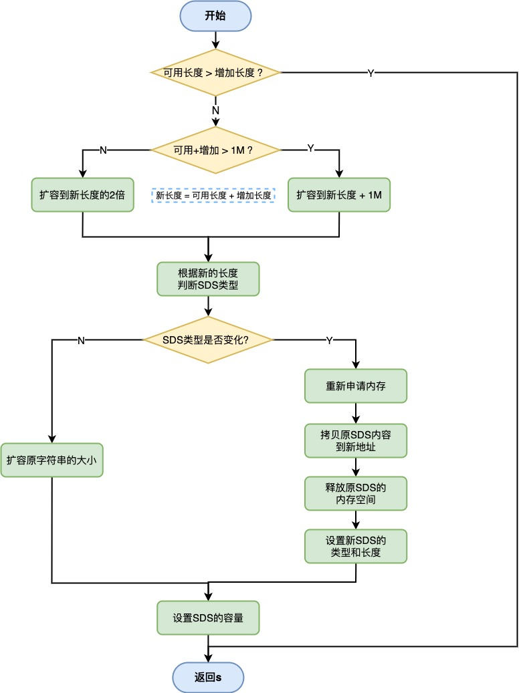
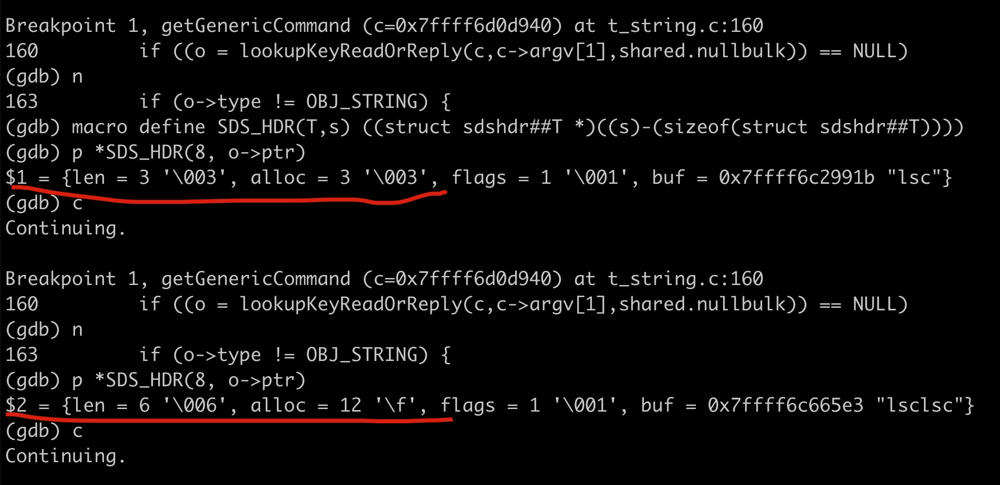

1. SDS扩容策略
在对SDS进行修改的时候，会先判断容量是否够用，不够用就自动扩容（sdsMakeRoomFor）。 查看源码
扩容流程如下：
- 如果SDS中剩余空间(avail)大于新增内容的长度(addlen)，则无需扩容；
- 如果SDS中剩余空间(avail)小于等于新增内容的长度(addlen)：
- 若新增后总长度 len+addlen < 1MB，则按新长度的两倍扩容；
- 若新增后总长度 len+addlen > 1MB，则按新长度加上 1MB 扩容。

空间预分配策略：SDS扩容会多分配了一些空间，减少修改字符串时带来的内存重分配次数；
🌰执行append命令如下：
127.0.0.1:6379> set name lsc
OK
127.0.0.1:6379> get name
"lsc"
(63.83s)
127.0.0.1:6379> append name lsc
(integer) 6
127.0.0.1:6379> get name
"lsclsc"
GDB调试如下： 